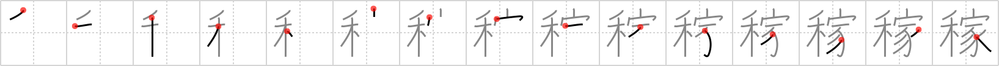

稼
← →
earnings

Reading:
On-Yomi: カ — Kun-Yomi: かせ.ぐ
Heisig story:
Wheat . . . house.
Koohii stories:
1) [Kieron] 3-7-2007(295): Your earnings allow you to bring home your daily bread (made of wheat, naturally).
2) [Nukemarine] 25-4-2008(85): Hmm, EARNINGS. Think of the popular saying "Bringing HOME the bacon". Here, EARNINGS is the picture "Bringing HOME the bread(WHEAT) and the bacon (PIG).
3) [PacifistGod] 10-4-2007(37): A farmer's earnings can be viewed as the amount of wheat he has in his grain silo (house).
4) [decamer0n] 31-3-2007(30): Earnings? Where I'm from, it's called bringing home the dough…
5) [jinkouchinou] 3-8-2009(14): The breadwinner (wheat bread winner) brings home the earnings.